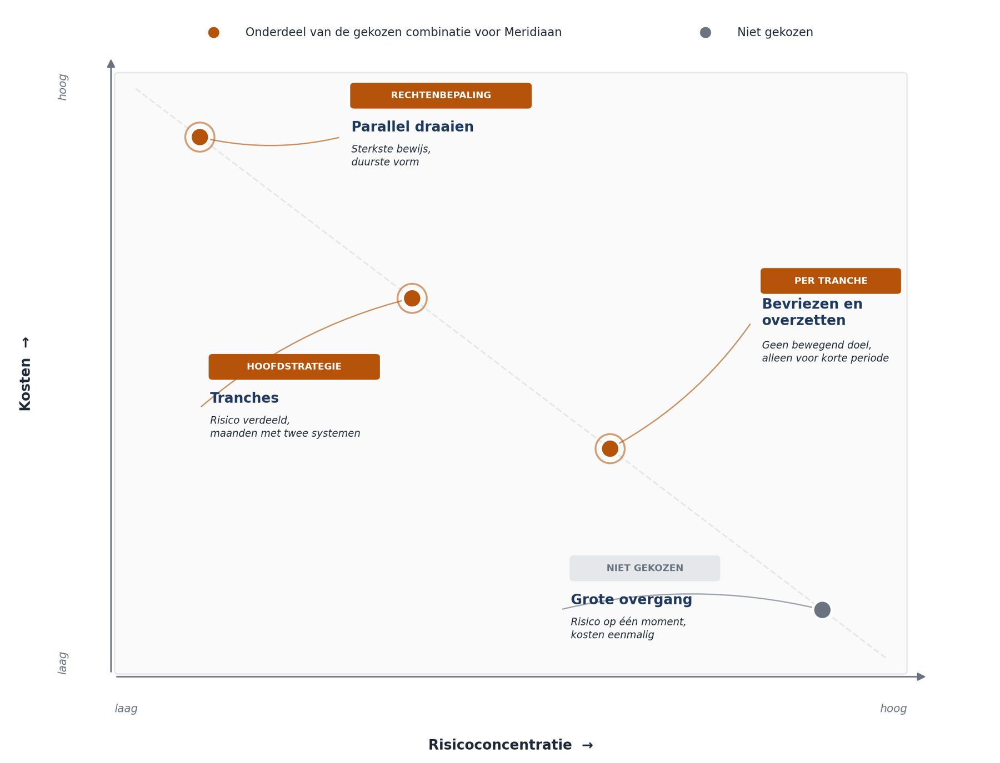

Cursus Softwarearchitectuur · Niveau 3 (CPSA-A certificeringstraject) · Deel 24 van 28
Migratie en modernisering
Fonds B moet in het Mutatieplatform: 85.000 deelnemersdossiers, dertig jaar mutatiehistorie, opgebouwd onder drie reglementstelsels in een ander systeem — terwijl de uitvoering doorloopt en de stelselovergang een deadline heeft die niet verschuift. Dit is het moeilijkste onderwerp van niveau 3, en de architectuur is hier niet het probleem: het probleem is dat u werkt met gegevens die u niet hebt gemaakt en waarvan de fouten pas zichtbaar worden wanneer een deelnemer een uitkering misloopt.
8secties
±2udagdeel + huiswerk
7controlevragen
4migratiestrategieën
Positionering. Niveau 3 begeleidt het CPSA-A-certificeringstraject; deze cursus is geen geaccrediteerde training en levert geen credit points — raadpleeg isaqb.org voor de actuele voorwaarden. Twee sporen lopen door dit deel: het casusspoor behandelt de migratie van fonds B, het eigen spoor betreft uw certificeringsopdracht.
Niveau 3: ➊ De certificeringsopdracht → ➋ Multi-tenancy → ➌ Migratie en modernisering (hier) → ➍ Trade-offs onder druk → ➎ Verdedigbaar stoppen en melden → ➏ De fout van twaalf jaar oud → ➐ De masterproef
01
De vraag
⏱ 14 min
Fonds B moet in het Mutatieplatform. Dat betekent: 85.000 deelnemersdossiers, dertig jaar mutatiehistorie, en een administratie die in een ander systeem met andere begrippen is opgebouwd.
Wat het zwaar maakt
De uitvoering draait door. Deelnemers van fonds B krijgen tijdens de migratie gewoon uitkeringen, doen mutaties, en overlijden.
De stelselovergang loopt. Rechten worden omgezet naar het nieuwe stelsel, met een wettelijke deadline.
De gegevens zijn dertig jaar oud. Er zitten dossiers in die zijn opgebouwd onder drie verschillende reglementstelsels, met twee systeemmigraties ertussen.
De vraag van dit deel: hoe brengt u dat over zonder dat er een deelnemer tussen wal en schip valt, en zonder dat het programma stilvalt?
Waarom dit het moeilijkste onderwerp is van niveau 3
De architectuur is hier niet het probleem. Het probleem is dat u werkt met gegevens die u niet hebt gemaakt, waarvan de betekenis deels verloren is, en waarvan de fouten pas zichtbaar worden wanneer iemand een uitkering misloopt.
02
Vier migratiestrategieën
⏱ 20 min
1. De grote overgang (big bang)
Op een afgesproken moment gaat alles over; het oude systeem gaat uit. Voordeel: geen periode met twee systemen, geen synchronisatie, kosten eenmalig. Nadeel: het risico is geconcentreerd op één moment, en de terugvaloptie is een volledige terugdraai — die na enkele uren productie praktisch onmogelijk is. Verdedigbaar bij beperkte omvang, goed begrepen gegevens, en een systeem waarvan de uitval een dag draaglijk is. Bij Meridiaan is geen van drie het geval.
2. In tranches
Groepen dossiers gaan achtereenvolgens over. Voordeel: het risico is verdeeld, u leert van de eerste tranche, terugvallen betreft één tranche. Nadeel: er is een periode — bij deze omvang: maanden — waarin beide systemen dossiers bevatten. De standaardkeuze bij grote administratieve migraties, en zij is het bij Meridiaan.
3. Parallel draaien
Beide systemen verwerken alles; de uitkomsten worden vergeleken. Voordeel: het sterkste bewijs dat de nieuwe verwerking klopt. Nadeel: duur — alles gebeurt twee keer, inclusief de invoer. Voor de berekeningen waarvan een fout onherstelbaar is. Niet voor het hele systeem, wel voor de rechtenbepaling.
4. Bevriezen en overzetten
Het oude systeem wordt bevroren, er wordt niets meer in gewijzigd, en de overzetting gebeurt zonder dat er nieuwe mutaties bijkomen. Voordeel: geen bewegend doel. Nadeel: de uitvoering staat stil, en dat kan bij een pensioenuitvoerder niet. Voor een deelverzameling en een korte periode, bijvoorbeeld een weekend voor één tranche.

Figuur 24-1 — de vier strategieën tegen risicoconcentratie en kosten: tranches als hoofdstrategie, parallel draaien op de rechtenbepaling, en bevriezen alleen kortstondig per tranche; de grote overgang valt af
De verdedigbare combinatie voor Meridiaan
Tranches als hoofdstrategie, met parallel draaien op de rechtenbepaling, en een kort bevriezingsvenster per tranche.
Controlevraag
Uit Werkboek deel 24, Opdracht 24.1 — de strategie kiezen voor fonds B
1Noem de drie gronden waarom de grote overgang voor fonds B niet verdedigbaar is. Welke is de beslissende?Toon antwoord
Drie gronden: de omvang (85.000 dossiers met dertig jaar historie is te groot om in één venster over te zetten en te controleren), de gegevenskwaliteit is onbekend tot u begint (bij een grote overgang ontdekt u problematische dossiers op het moment dat terugvallen al niet meer kan), en de terugvaloptie bestaat niet — na enkele uren productie zijn er mutaties verwerkt die het oude systeem niet kent. De derde grond is de beslissende en wordt vaak vergeten: een terugvaloptie die na een paar uur vervalt, is geen terugvaloptie.
03
Tranches ontwerpen
⏱ 18 min
Waarlangs snijdt u de tranches? Vier mogelijkheden, met verschillende gevolgen.
Snijlijn
Voordeel
Nadeel
Werkgever
Aansluiting bij de aanlevering; één contactpunt per tranche
Grote werkgevers geven grote tranches
Deelnemerstatus
Actieve deelnemers eerst, dan slapers, dan gepensioneerden
Gepensioneerden zijn het risicovolst en gaan dan het laatst
Dossiercomplexiteit
Eenvoudige dossiers eerst; u leert op laag risico
De moeilijke dossiers komen samen aan het eind
Willekeurig
Statistisch representatief; problemen komen vroeg boven
Onhandig in de communicatie naar werkgevers
De verdedigbare keuze is doorgaans een combinatie: begin met één kleine werkgever met eenvoudige dossiers — als proeftranche — en snijd daarna langs werkgever, met de moeilijkste dossiers bewust niet als laatste.
Waarom niet de moeilijkste als laatste
Dan ontdekt u de zwaarste problemen wanneer de deadline het dichtst is en de terugvalruimte het kleinst. Zet de moeilijkste categorie in de tweede of derde tranche, wanneer u de mechaniek beheerst en er nog tijd is.
Per tranche legt u vast: de omvang en welke dossiers erin zitten; de terugvalregel — wanneer draait u terug, en tot hoe lang na de overgang is dat mogelijk; de acceptatiecriteria — wat moet er kloppen voordat de tranche als geslaagd geldt; en waar een dossier staat tijdens de overgang, en hoe dat zichtbaar is voor een behandelaar.
Dat laatste punt wordt onderschat. Tijdens een migratie van maanden moet elke medewerker op elk moment kunnen zien in welk systeem een dossier leeft. Zonder dat ontstaan dubbele mutaties en dossiers die in beide systemen worden bewerkt.
Controlevraag
Uit Werkboek deel 24, Opdracht 24.2 — tranches ontwerpen op basis van de werkgeversverdeling
1Wat gebeurt er als een behandelaar tijdens de migratie het verkeerde systeem gebruikt, en wat is de werkbare oplossing?Toon antwoord
Zij voert een mutatie in die niet doorwerkt, de deelnemer krijgt geen bevestiging of een verkeerde, en het verschil komt pas boven bij de volgende afstemming — het meest voorkomende operationele probleem tijdens lange migraties. De werkbare oplossing is een centrale registratie die per dossier aangeeft welk systeem leidend is, zichtbaar vanuit beide systemen, inclusief een blokkade in het niet-leidende systeem. Groepen die alleen een "indicatie" ontwerpen zonder blokkade, lossen het niet op — onder tijdsdruk kijkt niemand naar een indicatie.
04
Gegevens die niet migreren
⏱ 18 min
Dit is waar migratieprogramma's werkelijk op stuklopen, en het is zelden de techniek.
Drie soorten problemen
Onvolledige gegevens. Velden die leeg zijn en gevuld hadden moeten zijn. Bij dertig jaar administratie is dit onvermijdelijk: gegevens die in 1998 niet werden vastgelegd omdat niemand ze nodig had.
Tegenstrijdige gegevens. Twee bronnen die elkaar tegenspreken — een deelnemer met twee verschillende geboortedatums, een partnerschap dat in het ene systeem eindigde en in het andere niet.
Onbegrepen gegevens. Een veld met een waarde waarvan niemand meer weet wat zij betekent. Bij twee eerdere systeemmigraties is dit gegarandeerd aanwezig.
Vier routes
Corrigeren vóór migratie. Werkt bij kleine aantallen en is de zuiverste route. Vraagt mensen die de gevallen beoordelen — de schaarse factor.
Migreren met markering. Het dossier gaat over, gemarkeerd als onvolledig, met een blokkade op de handelingen die het ontbrekende gegeven vereisen.
Niet migreren, apart afhandelen. Een kleine groep dossiers blijft in het oude systeem tot zij is opgelost — vraagt dat het oude systeem langer blijft draaien, precies wat u wilde vermijden.
Een besluit nemen over de betekenis. Bij onbegrepen gegevens vaststellen wat het veld betekent en migreren. Dit is een administratief besluit met mogelijk financiële gevolgen en het is niet aan de architect.
De verhouding die u kunt verwachten
Bij dertig jaar administratie is één tot vijf procent van de dossiers problematisch. Bij 85.000 dossiers is dat 850 tot 4.250 gevallen — een aantal dat u niet met de hand doet zonder dat vooraf te plannen. De fout die het vaakst wordt gemaakt is dit ontdekken tijdens de migratie in plaats van ervoor.
Controlevraag
Uit Werkboek deel 24, Opdracht 24.3 — twaalf voorbeelddossiers met problemen
1Bij 850 tot 4.250 problematische dossiers en een half uur beoordeling per geval: hoeveel mensmaanden kost dat, en waarom wordt die rekensom zelden vooraf gemaakt?Toon antwoord
Grofweg drie tot veertien mensmaanden aan beoordelingswerk. Die rekensom wordt zelden vooraf gemaakt, en zij is de belangrijkste uitkomst van deze opdracht: dat werk moet gedaan worden door mensen die de administratie kennen — en dat zijn precies de mensen die ook de lopende uitvoering doen. Als de som niet in de planning past, wordt de beoordelingscapaciteit de bepalende factor voor de tranche-indeling, niet de technische conversie: kleinere tranches, een langere doorlooptijd, of extra capaciteit — en die is niet zomaar in te huren, want de kennis is intern.
05
Wat u niet migreert
⏱ 14 min
Niet alles hoeft mee, en die vraag wordt zelden gesteld.
Kandidaten om te laten
Historie voorbij de bewaartermijn. Wat wettelijk weg mag, hoeft niet mee. Dat scheelt volume en het scheelt problematische gevallen — de oudste gegevens zijn de slechtste.
Afgesloten dossiers zonder lopende verplichting. Overleden deelnemers zonder nabestaandenuitkering, afgehandelde waardeoverdrachten.
Detailhistorie waarvan de samenvatting volstaat. Niet elke mutatie uit 1997 hoeft als gebeurtenis mee; de resulterende toestand plus een verwijzing naar het archief kan voldoen.
De voorwaarde bij alle drie
Het moet verantwoord kunnen worden. Wat u niet migreert, moet toegankelijk blijven — in een archief, op een leesbare vorm, met een beschrijving — en u moet het kunnen benoemen wanneer een toezichthouder of een deelnemer erom vraagt.
De valkuil is het omgekeerde: alles migreren omdat weglaten eng voelt. Dat levert een systeem op met dertig jaar gegevens waarvan u de kwaliteit niet kent, en met problematische gevallen die u nooit hoefde over te nemen. Elk gemigreerd dossier is een dossier dat u vanaf dat moment bezit — inclusief zijn fouten.
Controlevraag
Uit Werkboek deel 24, Opdracht 24.4 — wat migreert niet
1Een deelnemer uit 1994 vraagt over vijf jaar om inzage in zijn volledige historie, die niet is gemigreerd. Kunt u die leveren?Toon antwoord
Het antwoord moet zijn: ja, binnen een vooraf vastgelegd aantal werkdagen, uit het archief. Niet-migreren mag; onbereikbaar maken niet. Een archief waaruit binnen redelijke termijn geleverd kan worden, is voldoende; een archief dat alleen door een specialist te ontsluiten is die er over vijf jaar niet meer werkt, is dat niet. Dat is ook wat u kunt tegenover een toezichthouder verantwoorden: wat is niet gemigreerd, op welke grond, waar is het, en hoe lang duurt het om het te leveren.
06
Het oude systeem uitfaseren
⏱ 16 min
Uit deel 13 kent u het strangler-patroon. Hier is de toepassing zwaarder omdat het om gegevens gaat en niet om functionaliteit.
De vijf stappen, administratieve variant
Het nieuwe systeem naast het oude zetten, met een sluitende regel over waar een dossier leeft.
Tranche voor tranche overzetten, met acceptatiecriteria per tranche.
Meten — niet alleen of de migratie technisch slaagde, maar of de uitkomsten kloppen (sectie 7).
Het oude systeem leegmaken en het schrijven erop blokkeren.
Uitzetten, en de gegevens archiveren.
Stap 5 wordt jaren uitgesteld
Dat is de meest voorkomende uitkomst in deze sector. Het oude systeem blijft draaien "voor de zekerheid", kost onderhoud, vraagt beveiligingspatches, en houdt kennis vast die nergens anders bestaat.
De maatregel: een uitzetdatum vastleggen bij de start van de migratie, met een eigenaar, en die datum behandelen als een verplichting en niet als een streven. Uit deel 9: zonder eigenaar en termijn is het een voornemen.
Wanneer u niet uitfaseert
Er zijn verdedigbare gevallen: een klein deel van de dossiers is niet migreerbaar en de kosten van oplossen zijn hoger dan de kosten van laten staan; het oude systeem bedient nog iets anders dat niet in scope was; of de archieffunctie is goedkoper in het oude systeem dan in een nieuwe voorziening. In alle drie de gevallen geldt: leg het vast als besluit met een herzieningsgrens. Een oud systeem dat blijft omdat niemand het uitzette, is iets anders dan een oud systeem dat blijft omdat dat de goedkoopste optie is — en het verschil is alleen zichtbaar als iemand het opschrijft.
Controlevraag
Uit Werkboek deel 24, Opdracht 24.6 — uitfaseren, met het conversieverslag van een migratie elders in de sector
1In een migratie elders in de sector bleef het oude systeem zes jaar draaien. Wat waren de gevolgen, en wat had het voorkomen?Toon antwoord
De gevolgen: jaarlijkse onderhoudskosten, beveiligingspatches op verouderde technologie, twee mensen die de enigen waren die het kenden en die niet met pensioen konden, en — het zwaarst — een dubbele bron van waarheid waarvan bij twee gelegenheden bleek dat de systemen uiteen waren gelopen. Wat het had voorkomen: een uitzetdatum met eigenaar bij de start, en een expliciet besluit bij elke verlenging — verlengen met reden en nieuwe datum, of alsnog uitzetten. Wat er niet gebeurt: stilzwijgend doorschuiven. Dat is precies hoe systemen zes jaar blijven draaien.
07
Meten of het klopt
⏱ 16 min
Een migratie die technisch slaagt en inhoudelijk faalt, is de gevaarlijkste uitkomst: het systeem draait, niemand meldt een storing, en de fouten komen naar boven bij individuele deelnemers, verspreid over jaren.
Drie meetvormen, in volgorde van kracht
Parallelle berekening. Voor de rechtenbepaling: bereken in beide systemen en vergelijk. Verschillen zijn ofwel een fout in de migratie, ofwel een fout in het oude systeem — en dat tweede komt vaker voor dan verwacht.
Aggregaatcontroles. Tellingen en sommen die aan beide kanten gelijk moeten zijn: aantal dossiers, totaal aan verplichtingen, aantal lopende uitkeringen. Vindt grote fouten, mist individuele.
Steekproeven met menselijke beoordeling. Een aantal dossiers volledig nalopen door iemand die de administratie kent. Duur, langzaam, en het vindt wat de andere twee missen.
Wat u vastlegt vóór de eerste tranche: welke verschillen acceptabel zijn en welke niet. Een verschil van één cent door afronding is iets anders dan een verschil van één maand in een ingangsdatum, en dat onderscheid moet vooraf vaststaan — anders wordt het tijdens de migratie onderhandeld, onder tijdsdruk.
De zwaarste vraag van dit deel
Wanneer de parallelle berekening een verschil laat zien dat in het oude systeem fout blijkt te zijn, staat u voor een andere vraag dan een migratievraag — mogelijk zijn er jarenlang verkeerde bedragen berekend. Dat is de brug naar deel 27.
Controlevraag
Uit Werkboek deel 24, Opdracht 24.5 — het meetplan voor de migratie
1Bij 200 dossiers blijkt het oude systeem fout te zijn geweest. Wat is de volgorde van informeren, en wat doet u vóórdat u meldt?Toon antwoord
De volgorde: eerst de opdrachtgever binnen het programma, dan de directie, dan compliance en juridische zaken. Niet: eerst zelf uitzoeken hoe erg het is — de verleiding om eerst de omvang vast te stellen is groot en zij kost u de meldingstermijn. Wat u wél doet voordat u meldt: vaststellen dat het verschil echt is en niet een fout in uw eigen vergelijking. Dat kost uren, niet weken.
08
Vooruitblik en samenvatting
⏱ 10 min
Deel 25 volgt de derde Meridiaanvraag: wat doet u als twee eisen elkaar uitsluiten en de deadline niet verschuift? De tranche- en meetkeuzes uit dit deel zijn precies waar zulke conflicten het eerst zichtbaar worden.
Samenvatting
Vier strategieën: grote overgang, tranches, parallel draaien, bevriezen. Voor een grote administratieve migratie zijn tranches de standaard, met parallel draaien op de berekeningen waarvan een fout onherstelbaar is.
Snijd tranches langs werkgever, met een kleine proeftranche vooraf — en zet de moeilijkste categorie in de tweede of derde tranche, niet de laatste.
Leg per tranche vast: omvang, terugvalregel, acceptatiecriteria, en waar een dossier staat tijdens de overgang.
Migraties stranden op gegevens, niet op techniek. Reken op één tot vijf procent problematische dossiers en analyseer vóór de eerste tranche.
Het besluit over de betekenis van een onbegrepen veld is administratief en heeft financiële gevolgen — niet aan de architect.
Niet alles hoeft mee. Wat u laat, moet toegankelijk en verantwoordbaar blijven. Elk gemigreerd dossier is een dossier dat u vanaf dat moment bezit, inclusief zijn fouten.
Stap 5 van het strangler-patroon — uitzetten — wordt jaren uitgesteld. Leg een uitzetdatum vast bij de start, met een eigenaar.
Een migratie die technisch slaagt en inhoudelijk faalt, komt naar boven bij individuele deelnemers, verspreid over jaren. Leg vóór de eerste tranche vast welke verschillen acceptabel zijn.
Kernbegrippen
Tranche — een groep dossiers die als eenheid migreert, met eigen acceptatiecriteria en terugvalregel. Parallel draaien — beide systemen laten verwerken en de uitkomsten vergelijken; het sterkste bewijs en de duurste vorm. Proeftranche — een kleine eerste tranche met laag risico, bedoeld om de mechaniek te leren. Migreren met markering — een onvolledig dossier overzetten met een blokkade op handelingen die het ontbrekende gegeven vereisen. Acceptatiecriteria per tranche — vooraf vastgelegde grenzen aan wat een geslaagde overgang is.
Controlevraag
Uit Werkboek deel 24, Opdracht 24.7 — toegepast op uw eigen certificeringsopdracht
1Veel deelnemers antwoorden dat er in hun eigen systeem iets ouds blijft draaien zonder besluit. Waarom is dat antwoord bruikbaar materiaal voor de certificeringsopdracht?Toon antwoord
Omdat het eerlijk is en herkenbaar: het werkt, niemand heeft er tijd voor, en de kennis om het uit te zetten is weg — dat is uitstel, geen besluit. Een opdracht waarin staat dat een onderdeel is blijven staan zonder besluit, en waarin u benoemt wat dat kost, is sterker dan een opdracht waarin het onderwerp ontbreekt. Voor deelnemers zonder migratie in hun opdracht levert de vraag "wat zou er gebeuren als dit systeem morgen vervangen moest worden" doorgaans hetzelfde beeld op: velden waarvan de betekenis is verschoven, gegevens uit een vorige systeemgeneratie, en categorieën waarvan niemand weet of zij nog gebruikt worden — precies wat een examinator interessant vindt.
Verder naar deel 25
Deel 25 behandelt trade-offs onder druk: wat doet u als twee eisen elkaar uitsluiten en de deadline niet verschuift? Neem uw acceptatiecriteria uit dit deel mee — daar wordt de eerste botsing meestal zichtbaar.